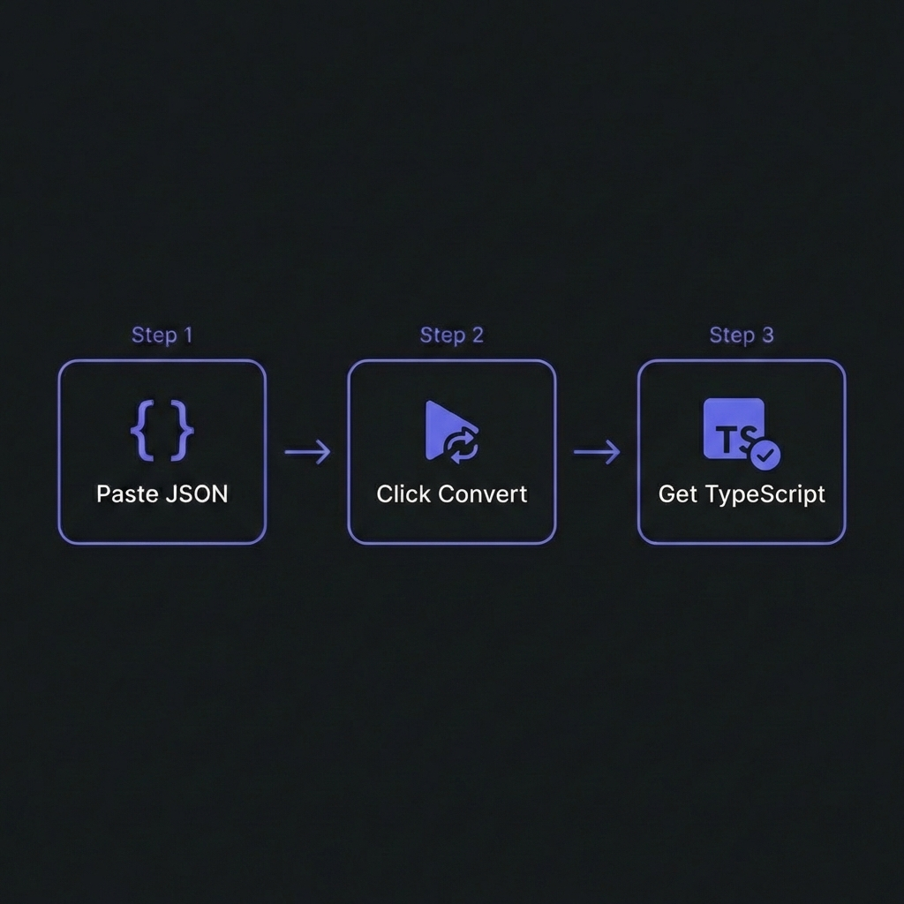

JSON TO TYPESCRIPT: Your complete guide to mastering this tool
Converting JSON to TypeScript types is one of the most common tasks in modern web
development. Every API response, configuration file, and data structure needs proper type definitions
for type-safe development. But manually typing complex JSON structures is tedious, error-prone, and
time-consuming. That's where JSON to TypeScript generators become essential tools in every developer's
workflow.
This comprehensive guide covers everything you need to know about JSON to TypeScript
conversion, including type inference strategies, Zod validation schemas
for runtime safety, and production best practices used by senior engineers at top tech companies.

How to Convert JSON to TypeScript - Simple 3-step workflow
Understanding JSON to TypeScript Conversion
JSON to TypeScript conversion is the process of analyzing JSON data structures and
generating corresponding TypeScript type definitions. TypeScript provides compile-time type checking,
catching errors in your IDE before code execution. This dramatically reduces bugs and improves developer
experience with features like autocomplete and inline documentation.
However, TypeScript types are erased at runtime. After compilation to JavaScript, no
type information exists. This means TypeScript cannot protect your application from malformed data
received from external sources like APIs, user input, or third-party services. That's where
Zod enters the equation—providing runtime validation that TypeScript cannot.
Why Generate Types Instead of Writing Manually?
Speed: Generate types for complex 500-line JSON responses in seconds instead of
hours
Accuracy: Eliminate human errors from manual type transcription
Consistency: Ensure types exactly match actual data structure
Maintainability: Regenerate types when API contracts change
Documentation: Generated types serve as living documentation of data structures
TypeScript Type Generation Explained
When you paste JSON into a type generator, an intelligent type inference engine analyzes
every value and creates appropriate TypeScript definitions:
Primitive Type Detection
The generator examines each value's JavaScript type and maps it to TypeScript:
// JSON Input
{
"name": "John Doe", // string
"age": 28, // number
"isActive": true, // boolean
"lastLogin": null // null (often = optional)
}
// Generated TypeScript
interface User {
name: string;
age: number;
isActive: boolean;
lastLogin?: null; // Optional due to null value
}
Array Type Inference
Arrays are analyzed to determine their element types. Homogeneous arrays get typed directly; mixed arrays
become union types:
Paste your JSON and instantly generate TypeScript interfaces or Zod schemas. 100% free, 100%
client-side.
Zod Schema Generation for Runtime Validation
While TypeScript catches errors at compile-time, Zod provides runtime
validation—essential for any production application that receives external data. When you
fetch data from an API, you're trusting that the response matches your types. But APIs can change, bugs
can occur, and malicious actors can send unexpected data.
The Runtime Validation Problem
// This compiles fine, but crashes at runtime if response is malformed
const response = await fetch('/api/user');
const user: User = await response.json();
console.log(user.name.toUpperCase()); // TypeError if name is undefined!
Zod Solution
// Zod validates at runtime before your code touches the data
const UserSchema = z.object({
name: z.string(),
email: z.string().email(),
age: z.number().min(0)
});
const response = await fetch('/api/user');
const rawData = await response.json();
const user = UserSchema.parse(rawData); // Throws detailed error if invalid
// Now 'user' is guaranteed to match the schema
Smart Validation Generation
Quality type generators detect common patterns and add appropriate Zod validations:
Strings containing "@" → z.string().email()
Strings starting with "http" → z.string().url()
Null values → .optional() or .nullable()
Arrays → z.array(itemSchema) with nested schema references
Best Practice: Single Source of Truth
The most robust approach is using Zod schemas as your single source of truth, then inferring TypeScript
types from them:
import { z } from 'zod';
// Define Zod schema (runtime)
export const UserSchema = z.object({
id: z.number(),
email: z.string().email(),
name: z.string(),
createdAt: z.string().datetime()
});
// Infer TypeScript type (compile-time)
export type User = z.infer<typeof UserSchema>;
// Usage
async function fetchUser(id: number): Promise<User> {
const response = await fetch(`/api/users/${id}`);
const data = await response.json();
return UserSchema.parse(data); // Validated + typed!
}
This pattern ensures your runtime validation and compile-time types can never drift out of
sync—changes to the schema automatically update the type.
When to Use TypeScript vs Zod
Use TypeScript Interfaces When:
Typing internal application state that you fully control
Defining function parameter and return types
Creating complex generic types and utilities
Documenting code structure for team collaboration
Use Zod Schemas When:
Validating external API responses before processing
Handling user form input and submissions
Parsing configuration files at startup
Processing webhook payloads from third-party services
Reading environment variables with type safety
Production Best Practices
1. Use Representative Sample Data
Generate types from production-like JSON, not minimal examples. If fields can be null in
production but your sample has values, manually adjust optionality.
2. Review and Enhance Generated Code
Generators make best-effort inferences. Add JSDoc comments, refine optional fields, add custom Zod
refinements, and split large types into smaller pieces based on domain knowledge.
3. Version Control Your Types
Commit generated type files to track API contract evolution. Review type changes in pull
requests—unexpected type changes often indicate API breaking changes.
4. Use TypeScript Utility Types
// Create variations for different use cases
type CreateUserInput = Omit<User, 'id' | 'createdAt'>;
type UpdateUserInput = Partial<Omit<User, 'id'>>;
type UserSummary = Pick<User, 'id' | 'name' | 'email'>;
5. Handle Errors Gracefully
// Use safeParse for non-throwing validation
const result = UserSchema.safeParse(data);
if (!result.success) {
console.error('Validation failed:', result.error.issues);
return { error: 'Invalid user data' };
}
return { user: result.data };
Common Integration Patterns
React Hook Form + Zod
import { useForm } from 'react-hook-form';
import { zodResolver } from '@hookform/resolvers/zod';
const form = useForm<User>({
resolver: zodResolver(UserSchema)
});
tRPC with Zod
import { z } from 'zod';
import { router, publicProcedure } from './trpc';
export const userRouter = router({
create: publicProcedure
.input(UserSchema)
.mutation(({ input }) => createUser(input))
});
Next.js API Routes
export default async function handler(req, res) {
const result = UserSchema.safeParse(req.body);
if (!result.success) {
return res.status(400).json({ errors: result.error.issues });
}
// result.data is fully typed
}
Frequently Asked Questions
What's the difference between TypeScript interfaces and Zod schemas?+
TypeScript interfaces exist only at compile-time for static type checking in
your IDE and during compilation. They're erased completely at runtime. Zod
schemas exist at runtime and actively validate data, throwing errors for
invalid input. Use Zod for external data validation; use TypeScript for internal code
structure. Best practice: define Zod schemas and infer TypeScript types from them with
z.infer.
Can I convert TypeScript types to Zod schemas?+
Not directly—TypeScript types don't exist at runtime, so there's nothing to convert. The
recommended approach is the reverse: define Zod schemas first, then infer TypeScript types
using type T = z.infer<typeof schema>. This makes Zod your source of
truth. Some tools like ts-to-zod can parse TypeScript source files and generate
equivalent Zod schemas, but this requires build-time processing.
How do I handle optional fields in generated types?+
Generators typically mark fields with null values as optional
(field?: type) or nullable (field: type | null). However, JSON
samples don't always represent all possible states. Review generated types and manually
adjust optionality based on your API documentation or actual behavior. For Zod, use
.optional() for fields that may be missing and .nullable() for
fields that may be null.
Is Zod the only runtime validation library?+
No, but it's the most popular choice for TypeScript projects. Alternatives include
Yup (older, widely used with Formik), io-ts (functional
programming style), Superstruct (lightweight), and Valibot
(smaller bundle size). Zod is preferred for its excellent TypeScript inference,
comprehensive API, and active community. Our generator focuses on Zod due to its industry
dominance.
Does generating types slow down my application?+
Type generation is a development-time activity with zero runtime impact on
application performance. TypeScript types are completely erased during compilation. Zod
validation does add minimal runtime overhead (microseconds per validation), but this is
negligible compared to network latency and is essential for data safety. Our generator
processes everything client-side in your browser—it never affects your deployed
application.
Can I use the generated code in production?+
Absolutely! Generated code follows TypeScript best practices with proper exports, type
annotations, and Zod imports. However, treat it as a starting point—add JSDoc
documentation,
refine optional fields based on actual API contracts, add custom Zod refinements (like
.min(), .max()), and consider splitting large types into smaller,
reusable pieces for better maintainability.
Is my JSON data secure when using online generators?+
Our tool processes 100% client-side—your JSON never leaves your browser.
All
parsing and type generation happens locally using JavaScript. We don't collect, store, or
transmit any data. You can verify this in your browser's Network tab—you'll see zero data
requests after the page loads. For sensitive production data, this client-side approach is
essential for security.
🎯 Start Generating Type-Safe Code
Convert your JSON to TypeScript interfaces and Zod schemas instantly. No signup, no data collection.